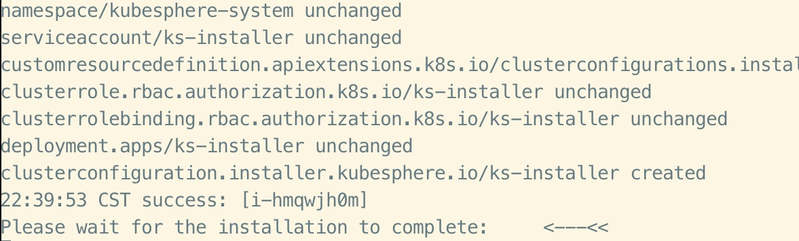
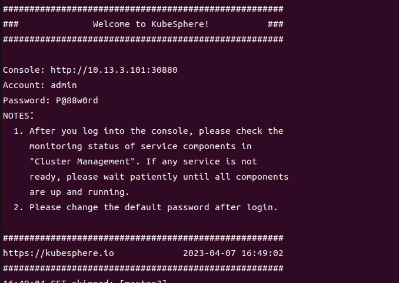

Kubesphere
- 其中etcd部署于Master节点,启用内置高可用模块
| Hosts | IP |
|---|---|
| master1 | 10.13.3.101 |
| master2 | 10.13.3.102 |
| master3 | 10.13.3.103 |
| woker1 | 10.13.3.104 |
| woker2 | 10.13.3.105 |
| woker3 | 10.13.3.106 |
一、执行
- 集群节点同步 ```
- /etc/hosts #集群中ip与主机名，主机别名的设置，规划主机在集群中的角色,(在hosts文件中定义或者定义一个变量文件)
- NTP #时间同步服务
- setenforce=0
- swapoff -a #关闭交换分区，shell实现
- systemctl stop firewalld #关闭防火墙，firewalld模块
- install socat conntrack ebtables ipset #安装依赖 ```
- 下载kubekey，生成配置文件，并做必要修改（加参数指定版本，加参数不指定版本将默认安装最新版本的kubesphere和kubernetes）
curl -sfL https://get-kk.kubesphere.io | VERSION=v3.3.2 sh -
./kk create config --with-kubesphere [version] --with-kubernetes [version] -f ./config.yml
spec:
hosts:
- {name: master1, address: 10.13.3.101, internalAddress: 10.13.3.101, user: root, password: "Inboc@2020"}
- {name: master2, address: 10.13.3.102, internalAddress: 10.13.3.102, user: root, password: "Inboc@2020"}
- {name: master3, address: 10.13.3.103, internalAddress: 10.13.3.103, user: root, password: "Inboc@2020"}
- {name: worker1, address: 10.13.3.104, internalAddress: 10.13.3.104, user: root, password: "Inboc@2020"}
- {name: worker2, address: 10.13.3.105, internalAddress: 10.13.3.105, user: root, password: "Inboc@2020"}
- {name: worker3, address: 10.13.3.106, internalAddress: 10.13.3.106, user: root, password: "Inboc@2020"}
roleGroups:
etcd:
- master1
- master2
- master3
control-plane:
- master1
- master2
- master3
worker:
- worker1
- worker2
- worker3
controlPlaneEndpoint:
## Internal loadbalancer for apiservers
internalLoadbalancer: haproxy #使用内置HAproxy创建高可用模式
./kk create cluster -f config.yml
二、报错
1. 超长时间停留在等待安装完成

1.1 新开终端查看各节点状态，各pod状态，并describe输出相应pod信息
root@master1:~/kubesphere# kubectl get pods -A
NAMESPACE NAME READY STATUS RESTARTS AGE
kube-system calico-kube-controllers-69d878584c-fhnl8 1/1 Running 0 6m57s
......
kubesphere-system ks-installer-85d6fb8c97-6crks 0/1 ImagePullBackOff 0 6m54s
root@master1:~/kubesphere# kubectl describe pod ks-installer-85d6fb8c97-6crks
Error from server (NotFound): pods "ks-installer-85d6fb8c97-6crks" not found
1.2 手动下载镜像
docker search并docker pull到本地，标签和kubesphere版本一致即可。
2.docker请求过多，下载次数达到上限
You have reached your pull rate limit. You may increase the limit by authenticat ing and upgrading: https://www.docker.com/increase-rate-limit: Process exited with status 1
>>
2.1 修改镜像源加速器为公司仓库、阿里云个人镜像源，仍发生相同报错
{
"log-opts": {
"max-size": "5m",
"max-file":"3"
},
"exec-opts": ["native.cgroupdriver=systemd"],
"registry-mirrors": ["https://repo.inboc.net"]
}
2.2修改加速器为腾讯或者网易的镜像源，可以成功,参考贴如下
vim /etc/docker/daemon.json
{
"registry-mirrors": [
"https://hub-mirror.c.163.com"
],
"live-restore": true
}
systemctl daemon-reload && systemctl restart docker
三、结果
- 等待几分钟，初始化完成，以下命令可查看安装日志
kubectl logs -n kubesphere-system $(kubectl get pod -n kubesphere-system -l 'app in (ks-install, ks-installer)' -o jsonpath='{.items[0].metadata.name}') -f - 安装完成，可以访问dashboard，并修改登录密码 
四、 自动化
着手准备ansible文件，以后自定义各个节点并自动部署，gitlab 1.1 对集群初始化,包括这些方面
关闭防火墙、交换分区1.2 选定一个master主机执行kubekey的下载
拷贝过去配置文件，其中hosts部分需要做变量设定或者修改！！！ 执行命令创建集群 对安装日志做查看- 部分书写规则 2.1 细致分解下去并书写角色，之后再用角色写playbook 2.2 在main.yml中使用include变量，以便引用角色时对不同的yml做引用。